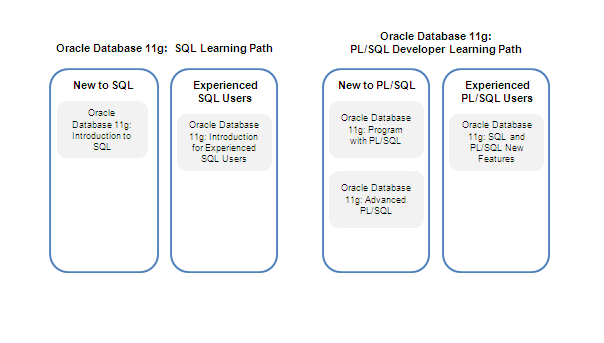

Oracle offers comprehensive training for SQL and PL/SQL development. There are two learning paths that provide an effective curriculum plan for those who are new to or experienced in SQL and PL/SQL. Courses in both learning paths will use SQL Developer as the graphical tool for database development.
In the SQL Learning Path, you learn the essential SQL statements that are used the majority of the time. You also gain advanced knowledge to tune SQL statements for optimal performance and use analytic SQL statements for data warehousing.
In the PL/SQL Learning Path, you learn the essential PL/SQL statements that are used majority of the time, as well as advanced programming topics. You also gain knowledge to write application programs that are secure.
|  |
In addition to a range of classroom courses, Oracle offers Web-based training through Oracle University Online Library. This convenient service includes an array of titles that teach Oracle's leading-edge technologies.